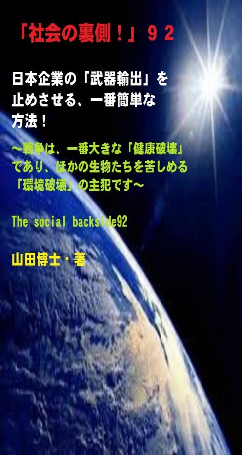

| 「社会の裏側！」９２......日本企業の「武器輸出」を止めさせる、一番簡単な方法！: 戦争は、一番大きな「健康破壊」であり、ほかの生物たちを苦しめる「環境破壊」の主犯です | |
| 山田博士 | |
| kominitesyuppankai (2018) | |

■「社会の裏側！」９２
日本企業の「武器輸出」を止めさせる、一番簡単な方法！
～戦争は、一番大きな「健康破壊」であり、ほかの生物たちを苦しめる「環境破壊」の主犯です～
The social backside92
山田博士・著
★本書の著作権について
皆さんにはまったく関係ないことだと思いますが、複写、転送、抜粋、転載など、著作権侵害にあたる行為は絶対になさらないで下さい。本書の著作権は、山田博士にあります。今後、皆さんのお役に立ちたい活動が出来なくなりますので、その点、ぜひよろしくお願いします。ささささ、それでは、本書をどうぞ、ごゆっくりご覧下さい。
★概要
いまの地球上には、「子どもばかり」で大人が存在しない。
そのような事態が進行しているように、ぼくには思えます。
このようなときこそ本来の日本人、そして伝統の日本の出番があると考えているのですが、まあ今回は、それは横に置いておくことにしまして......(笑)。
米ソの対立が終わりました。
そして、世界は小さな国々や民族が、各地で小競（こぜ）り合いを起こしています。
そして、それが広がっております。
社会的動物である人間は、誰か中心となる存在がいなくては絶対にダメだとぼくは思っているのですが、そのことは、これを見ても、よく分かります。
いまの世界には、中心がない。
★★★
もちろん、その中心的な存在が尊敬されるべきものではなくてはならないことは言うまでもありませんが、まあ、それはそれで大問題ではあるのですがね(笑)。
でも、いまの世界には、中心的な存在がどこにもなくなり、どこにいても安心できる場所がなくなってしまいました。
ひょっとして、あの「９．１１」（２００１年９月１１日のアメリカ同時多発テロ事件）が、こういう長くて暗い時代の幕開けだったのかもしれません。
しかし不思議なことがあります。
それは、ロシアやアメリカという軍事大国ならいざ知らず、きわめて小さな国や凄（すご）く小さな組織が、自分の武器をしっかり持っているということ。
しかも大量に......。
★★★
はたして、彼らは、自分の住む近くに、そのような武器工場を持ち、そこでみずからの技術でそれらの武器を生産しているのかどうか。
そしてまた、それに使う弾薬なども製造しているのかどうか。
それらを考えたこと、あなた、ありますか。
ところがそのような武器を持って、次々と戦争が各地で起こっている。
まさか、日本の企業が、そのような武器を彼らに......とは思いたくはないでしょうが、じつは、驚くべきことに、いつの間にか「日本の」企業が、その武器を......。
★★★
ところで、いったい、いつの間に「防衛装備庁」なる役所が出来て
いたんです？
ぼくは、迂闊（うかつ）にも、まったく知りませんでした。
皆さん、これ、ご存じでした？
ぼくにひと言も断りもせず......(笑)。
調べてみますと、この役所は防衛省の外局であり、２０１５年１０月１日に発足したばかりなんですね。
まあ、どうりで、あまり聞かない役所のはず。
その目的としては、防衛装備品の開発や取得、そして輸出を一元的に担（にな）う機関のようですが......その意味では、先の大戦中に設けられた「軍需省」と、なんとも似ていますよね。
★★★
２０１４年に、いままで国是（こくぜ）とされていた「武器輸出三原則」が、アベ政権のもとで、突然に閣議決定だけで撤廃されました。
そして......「ユーロサトリ」という見本市。
これは、隔年の６月ごろに、フランス・パリで開かれる世界最大級の武器見本市です。
先述しましたように、日本で「武器輸出三原則」が撤廃された直後の２０１４年、日本の軍需大手８社と中小４社が、ここに初出展をしています。
ちなみに、武器輸出をしている企業、あるいはしようとしている企業たちの名前を、本書でも載せておきます。
日本が自分の国の「防衛として使うならいざ知らず」、外国にこうした武器を輸出すればどうなるか。
こうした企業の名前をぜひ覚えておいて下さい。
武器の輸出は、必ず、殺された国民の反感を招きます。
そして、現在の欧米のように、日本人も「テロの心配」をしなくてはならない日が必ずやってきます。
ぜひ、いまのうちに、国民の力で......。
そして、戦争は、一番大きな「健康破壊」であり、ほかの生物たちを苦しめる「環境破壊」の主犯だということを、この際、頭に入れておきたいものです。
まままま、本書をどうぞ、ご覧下さい。
★目次
★（第１章）
戦争とは、両方が「自分だけは正しい」と思うところから、始まります。相手の主張を１ミリさえ聞かずに、全面的に拒否するところから始まるわけですね......
★（第２章）
いったい、いつの間に「防衛装備庁」なる役所が出来ていたんです？ぼくは、迂闊（うかつ）にも、まったく知りませんでした。皆さん、これ、ご存じでした？ ぼくは驚いたと同時に、少々、慌（あわ）ててしまいました......
★（第３章）
フランス・パリで開かれる世界最大級の武器見本市（ユーロサトリ）に、日本の軍需大手８社と中小４社が初出展をしました。そのとき、現在は「防衛装備庁」の幹部となった当時の防衛省の役人が、とんでもない発言をしているわけですね......
★（第４章）
ちなみに、武器輸出をしている企業。あるいはしようとしている企業たちの名前は、現在のところ、下記のとおりです。これらの企業に、このような手紙を、便せん１枚でもいい。出してみてください。その効果は予想以上に大きいものですぞ......
★「社会の裏側！」シリーズの既刊本案内
★プロフィール
（最初に、恥ずかしながら、ぼくの紹介を簡単に述べておきます）
やまだ・ひろし。
１９４７年、福井県小浜（おばま）市生まれ。
食生態学者。元大学名誉教授。日本危機管理学会会員。
山田博士いのち研究所主宰。
ベトナム戦争の終わったちょうどその年１９７５年に、マンガストーリィと商品の実名で食べものや環境を取り上げた小冊子「暮しの赤信号」を発行する。実名で取り上げたため、社会に衝撃を与えた。各号１０万部単位で読まれ、隠れたベストセラーなどと、新聞などで何度も報道される。
同じ年、偶然にも有吉佐和子さんの「複合汚染」が発表され、この小冊子はその動きも受けて多くの学校の副読本としても活用された。
文化放送の「なっちゃこワイド」や、ＮＨＫ海外放送「ある日本人」でお話しをしたり、ギター弾き語り公演や、各自治体や学校などへの講演なども続けている。
現在は、メルマガ「暮しの赤信号」（「短縮版」と「完全版」の２種）を発行し、企業名や商品名なども公表して、世界中のかたに喜ばれている。
その読者層は、医師や看護師、栄養士、教師、会社経営者、自治体など、国の内外を問わず、多くの読者たちから毎日のように便りが届いている。年齢層も、１０代からかなりの高齢のかたまで、さまざまだ。
このメルマガは、まぐまぐ！を始め３つのスタンドの合計で、７千部発行しているが、もしご関心のあるかたは、ご覧いただくと嬉しい。毎日、早朝５時に届けられる（日曜は除く）。その時刻を楽しみにされている読者も多いとか。
先述したように、メルマガ「暮しの赤信号」には２種類あり、「短縮版」のほうは無料。「完全版」のほうは、山田の思いが１００％掲載されており、社会を見るのに、毎回大いに参考になるだろう。そのほかにもさまざまな特典がある。「短縮版」については、次のアドレスで登録できる（「完全版」は、「短縮版」の中に案内あり）。
■「短縮版」登録（無料）→ http://goo.gl/AFx95J
また、毎月第３土曜日に、東京の恵比寿でお茶飲み会「博々亭（ひろびろてい）」を開催。遠路から毎回読者が駆けつけている。参加条件はメルマガ読者に限定。参加費用は無料だ（８月と１２月はお休み）。
著書に 『脱コンビニ食！』（平凡社新書）
『危険な食品』（宝島社新書）
『その食品はホンモノですか？』（三才ブックス）
『ひとり月１万円食費で幸せ生活』（ＷＡＶＥ出版）
『最新 危ないコンビニ食』（現代書館）
『あぶないコンビニ食』（三一新書）
『続 あぶないコンビニ食』（同）
『外食店健康度ランキング』（同）
『山田博士の暮しの赤信号』第１巻～第５巻（亜紀書房）
『暮しの赤信号』小冊子＆ＣＤ－ＲＯＭ版全２３巻
『月１万少々の食費で、ザクザクと健康を稼ぐぼくの
方法』
『いのち運転"即実践"マニュアル』各話
『社会の裏側！』各巻
（これは、アマゾン発行の電子書籍。ＰＤＦ版でも読
める）
『セーラー服と警察犬』（小説）各巻
『実話・食卓の事件簿』各巻......などがある。
山田のホームページ http://yamadainochi.com/
★はじめに......
こんにちは。
山田博士（やまだ・ひろし）です。
本書をご覧いただき、嬉しく思っております。
この内容をご覧いただくことで、少しでもあなたが「社会の裏側！」の流れにお気づきになり、そしてたとえ１ミリでもいい、即、行動されることを願っております。
ただ読むだけでは、誰でもできます。
それでは、あなたの身の回りの状況は石のように動きません。
本書をご覧になって、これは......と思うことがあれば、即行動なさって下さい。
お願いします。
その小さな行動の積み重ねこそが、あなたの明日を、１２色のバラ色で輝かせることになると信じております。
なお、この「社会の裏側！」は、今後もシリーズとして発刊して行くつもりです。
もしご関心があれば、「社会の裏側！」という名前で、アマゾンで検索してお調べ下さい。
さまざまな問題の社会の裏側！を詳しく、しかも楽しく述べております。
ぼくの名前で検索されても、見つかるのではないかと思います。
もし、「ＰＤＦ版」でご希望の場合は、ぼくの事務局まで遠慮なくお問い合わせ下さい。事務局→ http://goo.gl/t12Yx
ささささ、能書きはそこまでにします。
どうぞ、笑顔で、頁をお繰（く）り下さい。
お楽しみに！
★（第１章）
戦争とは、両方が「自分だけは正しい」と思うところから、始まります。相手の主張を１ミリさえ聞かずに、全面的に拒否するところから始まるわけですね......
いま、人類の歴史は、確か２１世紀です......。
ところが、その２０１６年８月１日。
中東のシリア北西部のイドリブで、ロシア軍の輸送ヘリコプターが、「何者か」に撃墜（げきつい）されたという報道がありました。
乗員の５人全員が、死亡したと言います。
これは、けっして不可抗力の自然災害などじゃなく、血の通っている人間が、血の通っている人間の乗っている飛行機を、わざわざ意図的に撃墜した......というわけですね。
瞬時に機体ともどもバラバラになるようなこんな悲惨なことは、「正気の人間」には絶対にできることではない。
ロシアのメディアは、「アレッポへ人道支援物資を届けた後のロシア軍の輸送ヘリ『ミル8（MI-8）』が、地上から撃墜された」とするロシア国防省の声明を伝えています。
たとえ戦争をしている間でも、「人道支援」という言葉が出るものなのですね。
誰しも、「自分だけは正しい」と主張したいわけです。
これは、何もロシアが正しいかどうかの話じゃなく、たとえ立場が逆のアメリカやイスラエル側が同じ結果になっても、同様でしょう。
戦争とは、両方が「自分だけは正しい」と思うところから、始まります。
相手の主張を１ミリさえ聞かずに、全面的に拒否するところから始まるわけですね。
そして、戦争を始めるのは簡単ですが、それを終結することには大変な苦労と悲しみと痛みが伴います。
しかも、子々孫々に......。
これは、国同士だけじゃなく、人間関係でも同じ。
砂場で３歳の子どもたちが、ケンカをしています。
「ちがわい。その小石は、ボクのものなんだぞお。お前のモンじゃないわい。寄こせ～」
「ワーン、ぼくの小石、あの子が取ったあ。ママあ～」
その子どもたちのケンカと、冒頭の「大人たちの戦争」と、どこがどう異なっているのでしょう(笑)。
自分の主張だけが正しい。
どうですか。
２１世紀にもなっているというのに、人類はまだこのような「３歳の子ども時代」の有り様なんですね。
まったく進歩していない。
恥ずかしい限りです。
いまの地球上には、「子どもばかりで大人が存在しない」......という事態が進行しているように、ぼくには思えます。
このようなときこそ本来の日本人、そして伝統の日本の出番があると考えているのですが、まあ今回は、それは横に置いておくことにしまして......(笑)。
このような戦争は、一番大きな「健康破壊」であり、ほかの生物たちを苦しめる「環境破壊」の主犯だということを、この際、ぜひ頭に入れておきたいものです。
そのような観点からも、こうした人間の「愚かな戦争」という行為は人間だけの問題じゃないため、絶対に止めなくてはならない。
米ソの対立が終わりました。
そして、世界は小さな国々や民族が、各地で小競（こぜ）り合いを起こしています。
そして、それが広がっております。
社会的動物である人間は、誰か中心となる存在がいなくては絶対にダメだとぼくは思っているのですが、そのことは、これを見ても、よく分かります。
いまの世界には、中心がない。
もちろん、その中心的な存在が尊敬されるべきものではなくてはならないことは言うまでもありませんが、まあ、それはそれで大問題ではあるのですがね(笑)。
でも、いまの世界には、中心的な存在がどこにもなくなり、どこにいても安心できる場所がなくなってしまいました。
ひょっとして、あの「９．１１」（２００１年９月１１日のアメリカ同時多発テロ事件）が、こういう長くて暗い時代の幕開けだったのかもしれません。
しかし不思議なことがあります。
それは、冒頭の事件でもそうですが、ロシアやアメリカという軍事大国ならいざ知らず、きわめて小さな国や凄く小さな組織が、自分の武器をしっかり持っているということ。
しかも大量に......。
はたして、彼らは、自分の住む近くに、そのような武器工場を持ち、そこでみずからの技術でそれらの武器を生産しているのかどうか。
そしてまた、それに使う弾薬なども製造しているのかどうか。
それらを考えたこと、あなた、ありますか。
もし、それらの武器が彼らの手元に何もなければ、戦争など、絶対に起こりませんよね。
違いますか。
ところが次々と戦争が各地で起こっている。
まさか、日本の企業が、そのような武器を彼らに......とは思われないでしょうが、じつは、驚くべきことに、いつの間にか「日本の」企業が、その武器を......。
つまり......。
★（第２章）
いったい、いつの間に「防衛装備庁」なる役所が出来ていたんです？ぼくは、迂闊（うかつ）にも、まったく知りませんでした。皆さん、これ、ご存じでした？ ぼくは驚いたと同時に、少々、慌（あわ）ててしまいました......
ところで、企業たちのそれらの動きをお話しする前に、お話ししておきたいことがあります。
いったい、いつの間に「防衛装備庁」なる役所が出来ていたんです？
ぼくは、迂闊（うかつ）にも、まったく知りませんでした。
皆さん、これ、ご存じでした？
ったく、ぼくにひと言も断りもせず......(笑)。
調べてみますと、この役所は防衛省の外局であり、２０１５年１０月１日に発足したばかりなんですね。
まあ、どうりで、あまり聞かない役所のはず。
その目的としては、防衛装備品の開発や取得、そして輸出を一元的に担（にな）う機関のようですが......その意味では、先の大戦中に設けられた「軍需省」と、なんとも似ていますよね。
まあ、でも、その「軍需省」は、商工省（現・経済産業省）を改組して設置されたものでしたから、この「防衛装備庁」のほうが、もっとキナ臭いかなあ。
まさに、そのものズバリ......の名前ですものね。
こんなものが、アベ君の政権になってから、「素速く」出来てしまっていた。
ぼくは驚いたと同時に、少々、慌（あわ）ててしまいました。
これ、どういうことかと言いますと、ご想像のとおり、日本から武器を外国へ「堂々と輸出できるようにする」という思いがあるわけなんですね。
この役所の存在は、それ以上でもそれ以下でもありません。
でも、ここで腕を組んで、数年前を思い起こしてみます。
そうでした。
２０１４年に、いままで国是（こくぜ）とされていた「武器輸出三原則」が、アベ政権のもとで、突然に閣議決定だけで撤廃されましたよね。
覚えていらっしゃいますか。
たしか、そのとき、ぼくは驚いて、このメルマガの中で少し述べたような、述べなかったような......（忘れっぽいぼくは、そんなこと、すっかり忘れてしまっていますけど）。
もちろん、いままでのこの「武器輸出三原則」でも、武器輸出そのものを絶対的に禁止していたわけではありません。
その時々の政府によって、さまざまな「解釈」がありました。
でも、この三原則によって、いままでは、曲がりなりにも、武器および武器製造技術や武器への転用可能な物品の輸出が、禁じられている「雰囲気」だったわけです。
そう、一つの歯止めがあった。
そのため、企業たちは、内心輸出したくても、「武器を積極的に輸出しよう」とはしてこなかったわけですね。
ところが、２０１４年４月。
突如、この「武器輸出三原則」に代わる新たな政府方針として、「防衛装備移転三原則」なるものを、閣議決定しました。
「●●移転三原則」......（●●は下記の設問を）。
とうとう、いまの政権の「本性（ほんしょう）」が、ここにきて出てきたというわけですね。
そして、その線上に、この「防衛装備庁」の設置があったわけです。こういうのを用意周到......と言います(笑)。
そして、その先は、もう見えております。
見ようとしなくても、見えております。
誰が何と言おうと、見えております(しつこい)。
ぼくは、あえて言いますが、「自宅に、外部から泥棒や凶悪犯が侵入してくれば」、防衛するための武器を持って、精一杯闘います。
そのための準備は、常日ごろ、しております。
家族を守るために、ね。
でも、その「武器」を、隣の家に売り込んで稼ごうなんていう気持ちは、さらさらありません。
考えてもみません。
皆さんもそうじゃありませんか。
え？
私なら、高い武器を売って、この際、儲けたい？
......なんてことは言いませんよね(笑)。
ところが、日本の企業たちが、子どもや女性や老人たちを平気で殺すことができるような武器を、なんと外国へ輸出しようとし始めました。
そして、政府自体が、それらの企業を支援する動きに出てきたわけですね。
つまり、「日本の死の商人」の大量生産に向けて、政府が積極的に動き始めたというわけです。
凄い社会になりました。
どうして、いまこういう動きになってしまったのか。
これは由々しき問題です。
つまり......。
★（第３章）
フランス・パリで開かれる世界最大級の武器見本市（ユーロサトリ）に、日本の軍需大手８社と中小４社が初出展をしました。そのとき、現在は「防衛装備庁」の幹部となった当時の防衛省の役人が、とんでもない発言をしているわけですね......
「ユーロサトリ」という見本市があります。
これは、隔年の６月ごろに、フランス・パリで開かれる世界最大級の武器見本市。
先述しましたように、日本で「武器輸出三原則」が撤廃された直後の２０１４年、日本の軍需大手８社と中小４社が、ここに初出展をしました。
そのとき、現在は「防衛装備庁」の幹部となった当時の防衛省の役人が、この「ユーロサトリ」で、とんでもない発言をしているわけですね。
もう、驚きです。
「（イスラエルの）機体と日本の技術を使うことでいろいろな可能性が出てくると思う」（ＮＨＫ「ドキュメント武器輸出」、２０１４年１０月）
この発言人物は、あとで「防衛装備庁」の幹部に昇進しております。
この発言の中のイスラエルは、少なくとも２０００年以降、数年おきに、パレスチナ自治区やレバノンなどに大規模な攻撃を仕掛けている国なんですね。
もちろん、相手があるわけですから、どちらも報復のまた報復......なんていう無差別の戦争を続けているわけですが、その片側陣営に、あろうことか、日本の武器を売り込もうとする。
イスラエルは、いまも、女性や子どもたちという非戦闘員を容赦（ようしゃ）なく殺傷しております。
しかも、このイスラエルは、現在、無人機を単なる偵察（ていさつ）目的だけじゃなく、なんと攻撃用としても使用しています。
実際に無人機による攻撃は、パレスチナ自治区の人々にとっては大きな脅威になっているようですね。
こうした「国際人道法違反」を繰り返すイスラエルとの、武器の共同研究の提案は、日本のいままでの理念に反するだけじゃなく、中東での日本のイメージダウンにつながりませんか。
また、在外にいる日本人や企業たちのリスク増大にもつながるように思えるのは、ぼくだけでしょうか。
どうして、あえてこのような危険を冒（おか）すのか。
ぼくたちがまったく知らぬ間に、「日本という国が中東での虐殺（ぎゃくさつ）に加担していた......」という悪夢が、いま現実化しようとしているわけですね。
恐ろしいことです。
そして、そのような目論見（もくろみ）に、日本の三菱電機や富士重工、そしてＮＥＣなどが関わろうとしている。
いままで血と汗と涙で作り上げてきた日本の科学技術を、どうしてこのような目的に使おうとするのか。
先述したような一部の官僚や政治家、そして財界人たちの意向だけで進められようとしているこの動きを、どうしてもいま、食い止めなくてはならないように、ぼくは思っております。
★（第４章）
ちなみに、武器輸出をしている企業。あるいはしようとしている企業たちの名前は、現在のところ、下記のとおりです。これらの企業に、このような手紙を、便せん１枚でもいい。出してみてください。その効果は予想以上に大きいものですぞ......
いまなら、遅くはない。
なぜなら、企業たちが一番怖れているのは、消費者の声です。
先述しましたように、２０１４年の「ユーロサトリ」には、日本の軍需大手８社と中小４社が、ここに初出展をしました。
ところが今回は、三菱重工を始めとする大手６社は、消費者の声などを鑑（かんが）みて、出展を断念しました。
今回は、大手企業として２回目の出展を決めたのはＮＥＣのみです。
しかし、初出展は三菱電機。
それに、ジャパンセルや藤倉航装が２回目の出展をしようとしております。
ただ、防衛省との取引がある企業はそうですが、取引のない中小企業たちは、初出展すると言います。
でも、国民の反対の声があれば、たとえ大企業と言えども動くことができないものなんですね。
なぜなら、現在のところ、日本企業の「軍需部門」の比率は、まだまだ少ないからです。
三菱重工や川崎重工で、約１割ぐらい。
そのほかの企業では、一桁（けた）ぐらいでしょうか。
だから、わずかこれだけの割合の「軍需部門」のために、自社の企業イメージが傷つくのを、企業たちは非常に怖れているわけですね。
と言うことは......。
そう、と言うことは、いまからでもまったく遅くはないということ。
いかに「防衛装備庁」が、イスラエルと共同作業をしようなんて目論んでいたとしても、消費者が、企業たちにノーと言い続ければ、「死の商人」は生まれないわけですね。
でも、そうしなければ、いつの間にか、日本の企業たちは「より儲かる分野」へと突き進むことでしょう。
とくにいまのように、国内が少子化や高齢化が進む中で、企業たちは生き残りをかけて、武器の輸出を考えているはずです。
自分たちの商品が売れて、お金が入ってくれば、それでいい。
たとえ、その商品が結果的に武器となって子どもや女性や老人たちを殺すことになろうとも、そんなことは、現在の自分には関係ない。
そう思う企業が増えれば、必ず、その報復が日本にやってきます。
それは必ずです。
外国の人たちは、必ずそのような因果関係に気がつきますからね。
そうした暁（あかつき）には、日本国内でさまざまなテロや事件が起こることでしょう。
日本だけは安心よね。
......なんて言っていた時代が、遠い過去のこととなることでしょう。
そして結局として、欧米列強たちが途上国で為してきた残酷行為を日本も加担したことになるわけです。
いったん、そうなれば、信頼を回復するには、莫大な時間とお金がかかります。
一度失った信用は、なかなか取り戻せません。
何度も言います。
いまからでも遅くはない。
皆さんも、そのような武器を輸出しそうな企業に対して１枚の便せんでもいい。
下記のような内容の文言を書いて、いますぐ出してください。
急ぎます。
しかしその効果は、あなたの予想以上に大きいものですぞ。
「私は貴社の商品をこれからも買い続けたいのです。そのため、ぜひ武器の輸出だけは絶対に止めて下さい。お願いします」
このひと言でいいんです。
この文章に、あなただけの言葉を添えて送ってみてください。
そうすれば、企業たちは、確実に動きます。
ちなみに、武器輸出をしている企業、あるいはしようとしている企業たちの名前は、現在のところ、下記のとおり。
ほかにももっとあるでしょうが、とりあえず、ご参考まで。
三菱重工
川崎重工
三菱電機
富士通
東芝
IHI
NEC
日立製作所
新明和工業
富士重工
日本製鋼所
藤倉航装
住友精密工業
KYB
などなど。
とくにあなたがいま使っている商品がそうであれば、率先して手紙を出すといいかもね。
戦争は、一番大きな「健康破壊」であり「環境破壊」の原因ですから。
地球上のどこでの戦争であっても、あなたやあなたの家族に、即、影響します。
そう言えば、ぼくがいま使っているパソコンは、東芝でしたなあ。
その前は、たしか、ＮＥＣでしたなあ。
よしっ、いまからでも遅くない！......（笑）。
ハハハ......。それじゃまた次回ね。ご機嫌よう。（山田博士）
▼設問です▼
設問→ 上記の文章を読み、下記の●●にあてはまるものを、選択語句から選んでみよ。ただし２文字とは限らない。
「●●移転三原則」......。
【選択語句→ 登山装備、標準装備、防衛装備】
■答え■
下記のとおりです。でも、先に答えを見てはいけません。
本文を再度ご覧になり、十分想像してから答えをご覧下さい。
きっとその繰り返しが、あなたの明日を輝かせることになると思っています。
答え→ 防衛装備
（了）
★（最後にひとこと）
ここまでお読みになって下さり、ありがとうございました。
ここで述べているような内容の最新情報を、メルマガ「暮しの赤信号」では述べております。
企業名や商品名も公表していますので、もしご関心のあるかたは、下記から登録されれば、毎回、自動的にお送りします。
「短縮版」は無料です。
毎回、早朝５時に、あなたのところへ配信します。
現在、全世界で数千部を配信しておりますが、楽しい文体が人気のようですよ。早朝５時をお待ちになっているかたも......。
その日から役立つ内容です。
「短縮版」（無料です）→ http://goo.gl/AFx95J
メルマガ上で、また、お逢いしましょう！
＝＝＝＝＝＝＝＝＝＝＝＝＝＝＝＝＝＝＝＝＝＝＝＝＝＝＝＝＝＝
★「社会の裏側！」シリーズの既刊本案内★
（山田博士・著）
「電子版」と「ＰＤＦ版」があります。お好みのほうで、どうぞ。
～これだけたくさん、マスコミも言わない内容が、存在します！
ご関心のあるものから、ご覧下さい～
＝＝＝＝＝＝＝＝＝＝＝＝＝＝＝＝＝＝＝＝＝＝＝＝＝＝＝＝＝＝
★「電子版」は、レートにもよりますが、５８５円前後。
各巻の専用頁からお求め下さい。
★「ＰＤＦ版」は、下記のフォームでご連絡下さい。
→ https://goo.gl/GPFu2B
１冊は、＠１０００円、
２冊は、＠６５０円、
３冊は、＠５００円、
４冊は、＠４００円......。
数が多くなればかなりの割引をしていますので、この機会に
ご関心のある「社会の裏側！」を、下記でご覧になって下さい。
★
★
★
【１】社会の裏側！ １......子宮頸ガンワクチンで女子中高生が泣いている！
→ https://goo.gl/BMwQTm
【２】社会の裏側！ ２......ペットボトルを「ペット」にしてはいけない。新生児の男女比が驚くことになっている！
→ https://goo.gl/QuFsYz
【３】社会の裏側！ ３......牛丼店「すき家」が、従業員を貧困のどん底に！
→ https://goo.gl/YrmzNf
【４】社会の裏側！ ４......小学校の低学年児に「向精神薬」を処方する医師たち！
→ https://goo.gl/L97NJu
【５】社会の裏側！ ５......映画「世界が食べられなくなる日」。原子力、「遺組み」の現実！
→ https://goo.gl/7HwZ38
【６】社会の裏側！ ６......蚊帳（かや）に練り込まれた「毒物」ってご存じでした？
→ https://goo.gl/dMa52s
【７】社会の裏側！ ７......あなたは、放射性物質が濃縮された「エコセメント」で住宅を建てますか？
→ https://goo.gl/UbkdH4
【８】社会の裏側！ ８......いまや加工食品の甘味のほとんどは「異性化糖」だ！遺伝子組み換えコーンによるこの甘味料が日本人を壊す
→ https://goo.gl/6FNSeG
【９】社会の裏側！ ９......ＬＥＤ照明の「人体実験国」ニッポン！
→ https://goo.gl/VQWQam
【１０】社会の裏側！ １０......コーラの着色料に「発ガン性」の疑惑が出た！
→ https://goo.gl/XvNdfn
【１１】社会の裏側！ １１......「香料」のせいで死ぬ思いの人たちへ！日本人の母乳や脂肪から初めて検出された「人工のムスク」
→ https://goo.gl/UcZRzf
【１２】社会の裏側！ １２......子どもの「健康格差」が凄まじい！なんと「就学援助」の小中学生が１４２万人になった
→ https://goo.gl/nGhdnC
【１３】社会の裏側！ １３......ＴＰＰと私設法廷。じつはこの「ＩＳＤ条項」こそが日本乗っ取りの要だった！
→ https://goo.gl/QyH2ot
【１４】社会の裏側！ １４......築地市場移転の本当の狙い！この裏に、電通と日本ＴＶ、そしてＧＳ社が蠢いていた！
→ https://goo.gl/BerZHM
【１５】社会の裏側！ １５......ミツバチたちが消えたら、人間は「４年も」生きられない！
→ https://goo.gl/dRuppK
【１６】社会の裏側！ １６......偽装食品がなぜ広がるのか！阪急阪神ホテルズのニセ食材事件なんて、氷山の一角に過ぎない
→ https://goo.gl/S4k2Yu
【１７】社会の裏側！ １７......過去最大の「米偽装事件」。それは米離れの若者が原因だった！
→ https://goo.gl/Px911Z
【１８】社会の裏側！ １８......総合ビタミン剤などのサプリメントは、ガンや心疾患のリスクを高める！
→ https://goo.gl/28qECA
【１９】社会の裏側！ １９......海に漂うプラスチック破片には、人類が過去生産してきた多くの有害化学物質、とくに「ＰＯＰｓ」が含まれていた！
→ https://goo.gl/gQTmb5
【２０】社会の裏側！ ２０......高血圧症患者が、「人為的に量産」されている！
→ https://goo.gl/BjxoYz
【２１】社会の裏側！ ２１......子どもの貧困は、「日本の未来」を左右する！
→ https://goo.gl/6g38Wq
【２２】社会の裏側！ ２２......サプリメントのほとんどが、中国産になっていた！
→ https://goo.gl/zbJ4RP
【２３】社会の裏側！ ２３......食品の「製造所固有記号」の秘密。あなたにこの記号が読めるか！
→ https://goo.gl/DdohXk
【２４】社会の裏側！ ２４......ドライバーの「生活習慣病」と人身事故との関係！
→ https://goo.gl/iSPk3i
【２５】社会の裏側！ ２５......武田薬品工業のニセ高血圧治療薬「ブロプレス」問題は、何を物語っているのか。その衝撃的背景！
→ https://goo.gl/RdVsmj
【２６】社会の裏側！ ２６......砂糖は「炭酸飲料１缶でアウト」というＷＨＯ指針の理由とは！
→ https://goo.gl/x62eDU
【２７】社会の裏側！ ２７......なんと「発達障害児」の急増に、「農薬」が関係していた！
→ https://goo.gl/HKdw63
【２８】社会の裏側！ ２８......田中正造「真の文明は、山を荒らさず、川を荒らさず、村を破らず、人を殺さざるべし！」
→ https://goo.gl/enMLkE
【２９】社会の裏側！ ２９......治験。ネットの求人欄で、「とくに日本人」を募集するアメリカでの実態！
→ https://goo.gl/nmWfhA
【３０】社会の裏側！ ３０......「味噌」が、放射性物質を除去するこの実験。世界の人に知らせたい！
→ https://goo.gl/BMFNnc
【３１】社会の裏側！ ３１......「夢のリニア新幹線計画」が、日本人を壊（こわ）す４大理由！
→ https://goo.gl/Le9iR1
【３２】社会の裏側！ ３２......「食べもの戦争」は、異常気候の変動でこう勃発する！
→ https://goo.gl/A1VY4S
【３３】社会の裏側！ ３３......「ＳＴＡＰ細胞」大騒動と、理研コンツェルンのねらいとは！
→ https://goo.gl/qP9A9K
【３４】社会の裏側！ ３４......遺伝子組み換えの「不妊サケ」が、食卓に並ぶ日が来た！
→ https://goo.gl/f8Ddif
【３５】社会の裏側！ ３５......カネボウ美白化粧品や、ＤＨＣ社「ディープクレンジングオイル」にみる「医薬部外品」の陰謀とは！
→ https://goo.gl/cQ1qvE
【３６】社会の裏側！ ３６......食べものに「放射線」を照射すると、その食品自体から放射線が出る危険性が分かった！
→ https://goo.gl/BlmXwd
【３７】社会の裏側！ ３７......原発汚染時代の、ニッポンの「魚」の食べかた！
→ https://goo.gl/mQN0pK
【３８】社会の裏側！ ３８......じつは「家族農業」が、日本の飢餓リスクを救う！
→ https://goo.gl/O1eS2i
【３９】社会の裏側！ ３９......遺伝子組み換え「ご飯」が、もうまもなくあなたの食卓に！
→ https://goo.gl/xxHcQy
【４０】社会の裏側！ ４０......「女性の目線」に立った原発レポート！
→ https://goo.gl/UbsWYt
【４１】社会の裏側！ ４１......糖尿病予備軍の人が、「熱中症」で亡くなるこの衝撃理由！
→ https://goo.gl/JwcNQD
【４２】社会の裏側！ ４２......子どもの好きな食品に、これだけも遺伝子組み換え作物が使われていた。実名リスト付き！
→ https://goo.gl/9wtRGi
【４３】社会の裏側！ ４３......自閉症などの発達障害は、遺伝じゃなく、農薬などの「環ホル」が原因であることが分かった！
→ https://goo.gl/jdhiEo
【４４】「社会の裏側！」４４......ファッション企業の「ファーフリー」（毛皮は扱わない）の動きが広まったが、中国ではアンゴラウサギたちが今日も生きたまま！
→ https://goo.gl/KFW6Zg
【４５】「社会の裏側！」４５......広く使われている「人工甘味料」が、実際には、糖尿病のリスクを逆に高めていた。その衝撃的な事 実とは！
→ https://goo.gl/xnC1Xn
【４６】「社会の裏側！」４６......ミツバチが消えた。じつは、あなたがシックハウスや居間の殺虫剤で倒れる原因も、これと同じだった！
→ https://goo.gl/aUskUS
【４７】「社会の裏側！」４７......愛するペットに「ペットフード」を与えてはいけない！
→ https://goo.gl/Hm9mfR
【４８】「社会の裏側！」４８......学校給食の栄養士が「本当は」使いたくない中国食材とは！
→ https://goo.gl/mhveE8
【４９】「社会の裏側！」４９......なぜ、「栄養ドリンク剤」を未成年に禁止している国があるのか！
→ https://goo.gl/thazbz
【５０】「社会の裏側！」５０......あなた、「老人難民」になりますか。それとも死にますか？
→ https://goo.gl/QfxAyo
【５１】「社会の裏側！」５１......甘味料「Ｓｐｌｅｎｄａ」でダイエット中のかた、ご愁傷さまです！
→ https://goo.gl/a1tdan
【５２】「社会の裏側！」５２......バター不足は、「農畜産業振興機構」という天下り団体の自作自演だった！
→ https://goo.gl/sguZcw
【５３】「社会の裏側！」５３......青色「ＬＥＤ」のために、世界から日本が糾弾される日！
→ https://goo.gl/RCtxDW
【５４】「社会の裏側！」５４......キレる子どもと切っても切れない食生活！
→ https://goo.gl/L8KVJk
【５５】「社会の裏側！」５５......正月の「しめ縄」から、放射性物質のセシウムが年ごとに増えている現実をどう見るか！
→ https://goo.gl/eQJXm6
【５６】「社会の裏側！」５６......「プチ脳梗塞」が３０代から始まっている。人生を途中下車しないための簡単な方法はこれだ！
→ https://goo.gl/NRpcjg
【５７】「社会の裏側！」５７......男女両方の「不妊症状」が普遍的になった背景は、これだ！
→ https://goo.gl/IR0PZR
■「社会の裏側！」５８......スマホやケータイの「人質」になってはいけない！
→ https://goo.gl/ZhR7Qp
■「社会の裏側！」５９......「コーヒーフレッシュ」に見る、日本のコピー食品事情！
→ https://goo.gl/f2LyhG
■「社会の裏側！」６０......「フクシマ３．１１」のその後！～あの日からすぐに、農産物や人体の放射性物質を測定し続けた県民たちがいた。 同じ家族でも夫のほうが数値が高いわけとは～
→ https://goo.gl/GiQyQF
■「社会の裏側！」６１......タクシー大手の「日本交通」よ、消臭剤添加の「ファブタク」なんて愚かな行為は、即お止めなさい！
→ https://goo.gl/BCFvbR
■「社会の裏側！」６２......「ペットボトル茶」を、本当のお茶だと信じて飲んでいる悲しい日本人！
→ https://goo.gl/foVzzs
■「社会の裏側！」６３......抗菌石鹸は使ってはいけない！それは当然だけど、今回の事件をきっかけに、「抗菌生活」の是非を考えようよ
→ https://goo.gl/i1NWhQ
■「社会の裏側！」６４......コンビニの「おにぎり」が腐敗しないわけ。ＰＨ調整剤の正体とは！
→ https://goo.gl/3BYY9b
■「社会の裏側！」６５......市販薬の「副作用」を、甘く見てはいけない！
→ https://goo.gl/UNsNVM
■「社会の裏側！」６６......「モンサント社」という企業を、少し考えてみようと思います！
→ https://goo.gl/XQVGtY
■「社会の裏側！」６７......次世代電力計「スマートメーター」の電磁波が、なぜこれだけも重大な影響を与えるのだろう。その具体的な数値をお伝えしよう！
→ https://goo.gl/ev8cjr
■「社会の裏側！」６８......大企業が税金を払わなくて済む凄いカラクリ。しかも消費税が、「法人税減収」を補填していた！
→ https://goo.gl/VfHVTT
■「社会の裏側！」６９......「エナジードリンク」が、なぜ死亡事故を招きやすいのか！
→ https://goo.gl/DtGmbS
■「社会の裏側！」７０......企業の「遺伝子検査」は、絶対に受けてはいけない！
→ https://goo.gl/jJ8NMm
■「社会の裏側！」７１......マーガリンが、あなたの体を溶かしている！
→ https://goo.gl/xTSx6r
■「社会の裏側！」７２......女性たちよ。マニキュアの３大化学物質に注意しなさい。ネイルサロンの美容部員たちが倒れる理由はこれだった！
→ https://goo.gl/aPRxFG
■「社会の裏側！」７３......自殺者多発の東尋坊で、数年間に５００人を救った「ちょっと待ておじさん」から学ぶ、日本人に大切なこととは！
→ https://goo.gl/Qaqyna
■「社会の裏側！」７４......夏！ 虫よけ対策、あなたならどうする？「ピレスロイド系」などにより、年間３００件の重大事故が多発中！
→ https://goo.gl/Wfggyf
■「社会の裏側！」７５......抗生物質が効かない！
→ https://goo.gl/nqYgjS
■「社会の裏側！」７６......ワン君やニャンコ嬢たちを殺してはいけない！動物を大切にしない国は、人間をも大切にしていないのです。彼らを救う３つの提案！
→ https://goo.gl/QhgCew
■「社会の裏側！」７７......漁師や魚たちの涙が、君に見えるか！
→ https://goo.gl/L7GEPt
■「社会の裏側！」７８......あえて言う、大きな利権が蠢（うごめ）く「盲導犬」は、本当に必要なのだろうか！
→ https://goo.gl/Ti1u6B
■「社会の裏側！」７９......大豆は、ボケを防ぐ「自然派総合ビタミン剤」です。なのに、「遺組み」表示義務がない食べものが、醤油などこれだけも溢れている！
→ https://goo.gl/fS2t9e
■「社会の裏側！」８０......いまや「１０５歳人」が日本に７００名も。これら長寿者に共通する「老荘や道教思想」とは何なのか。あなたにもぜひ真似してほしい！
→ https://goo.gl/7pizJz
■「社会の裏側！」８１......「在宅介護殺人事件」の裏側！
→ https://goo.gl/cQm5fX
■「社会の裏側！」８２......リプトンなどへ供給されるインドの「紅茶農園」の実態！
→ https://goo.gl/yWSaKq
■「社会の裏側！」８３......見えない「低周波公害」で苦しんでいるあなたに！
→ https://goo.gl/ijMMRo
■「社会の裏側！」８４......なぜ福井県は、「幸せ度がずっと日本一」なのか！
→ https://goo.gl/EdxM2e
■「社会の裏側！」８５......「無糖」飲料水でもご注意。そこにカフェインが含まれると血糖値がグンと上がる衝撃データ！
→ https://goo.gl/SnDcPC
■「社会の裏側！」８６......「かっぱ寿司」、「くら寿司」、「てんや」、「ほっかほっか亭」などに使われる中国産食材と、"抗生物質不合格店"の外食企業はここだ！
→ https://goo.gl/MFAa4h
■「社会の裏側！」８７......老齢基礎年金の「月５万円」で暮らす老人が８００万人。これで日本は先進国なのか。あなたが「下流老人」になるのを防ぐ方法！
→ https://goo.gl/RpGfhf
■「社会の裏側！」８８......あなたがそのバナナの皮をむくとき、まさかと思う劇薬農薬が飛行機で撒かれ、涙を流している「農園労働者」の姿が見えるだろうか！
→ https://goo.gl/6Vy6Gs
■「社会の裏側！」８９......「刺身盛り合わせ」に見る、滑稽さ山盛りの「食品表示制度」！
→ https://goo.gl/RxMH6X
■「社会の裏側！」９０......育児と介護の「ダブルケア」どころじゃない、自己ケアを含めた「トリプルケア」時代を、どう乗り切るか！
→ https://bit.ly/2IxM6Qy
■「社会の裏側！」９１......クルマの車内で浴びる電磁波の凄い量と、人体への影響とは！
→ https://bit.ly/2GDu7eM
★「ＰＤＦ版」の場合は、下記のフォームからご連絡下さい。
→ https://goo.gl/GPFu2B
★奥付
■「社会の裏側！」９２
日本企業の「武器輸出」を止めさせる、一番簡単な方法！
～戦争は、一番大きな「健康破壊」であり、ほかの生物たちを苦しめる「環境破壊」の主犯です～
The social backside92
山田博士・著
第１刷発行日：2018/04/17
－－－－－－－－－－－－－－－－－－－－－－－－－－－－－－
山田博士／著
発行／山田博士いのち研究所
105-0001東京都港区虎ノ門２－２－５共同通信会館Ｂ１Ｆ
http://yamadainochi.com/
事務局→ http://goo.gl/t12Yx
－－－－－－－－－－－－－－－－－－－－－－－－－－－－－－